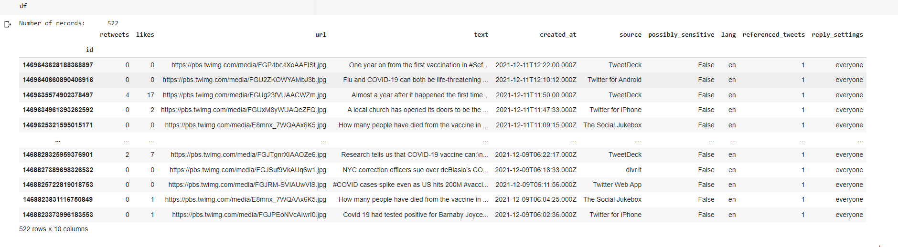
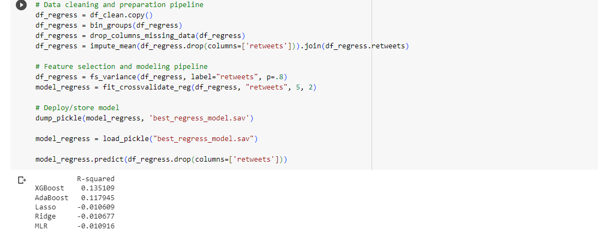
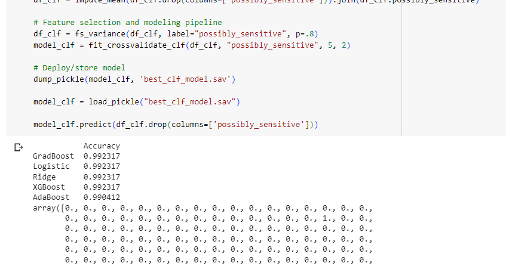
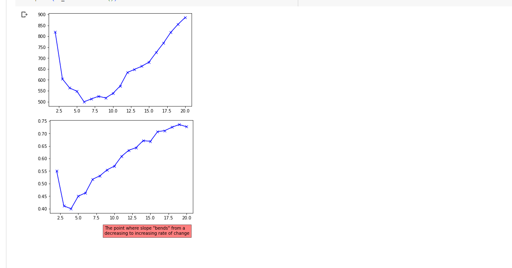

TWITTER DATA ANALYSIS
- Project Purpose: understanding the US public opinion regarding the COVID 19 pandemic
- Technology: using Python in a Google Colab environment including many open-source packages: sklearn, pandas, numpy, seaborn, matplotlib, genism, nltk, spacy, and more
- Dataset: using Twitter API to retrieve 500 relevant tweets including both text and images
- Feature engineering and data cleaning: utilizing all available features including generating new features based on text analysis and image processing to predict those tweets that were more socially promoted through ‘likes’, ‘retweets’, ‘quotes’, and ‘replies.’
-
Output
- Generating relevant exploratory data analyses and visualizations
- Perform testing on dozens of algorithms for regression, classification, and clustering models to predict the mentioned available labels. This included hyperparameter and feature selection



